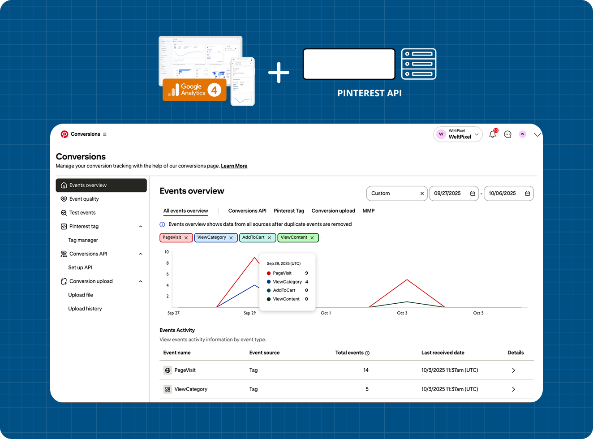
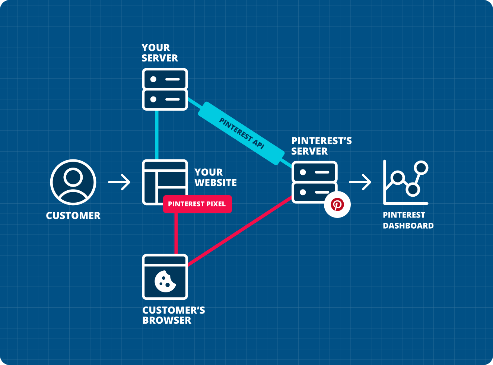
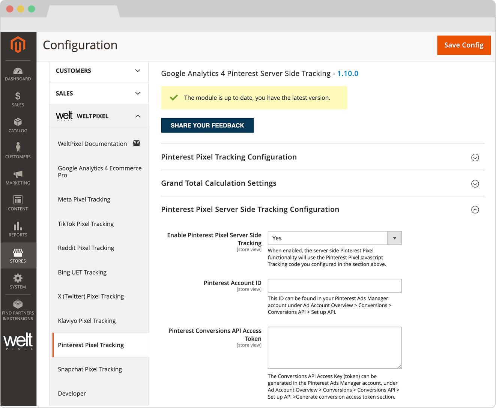
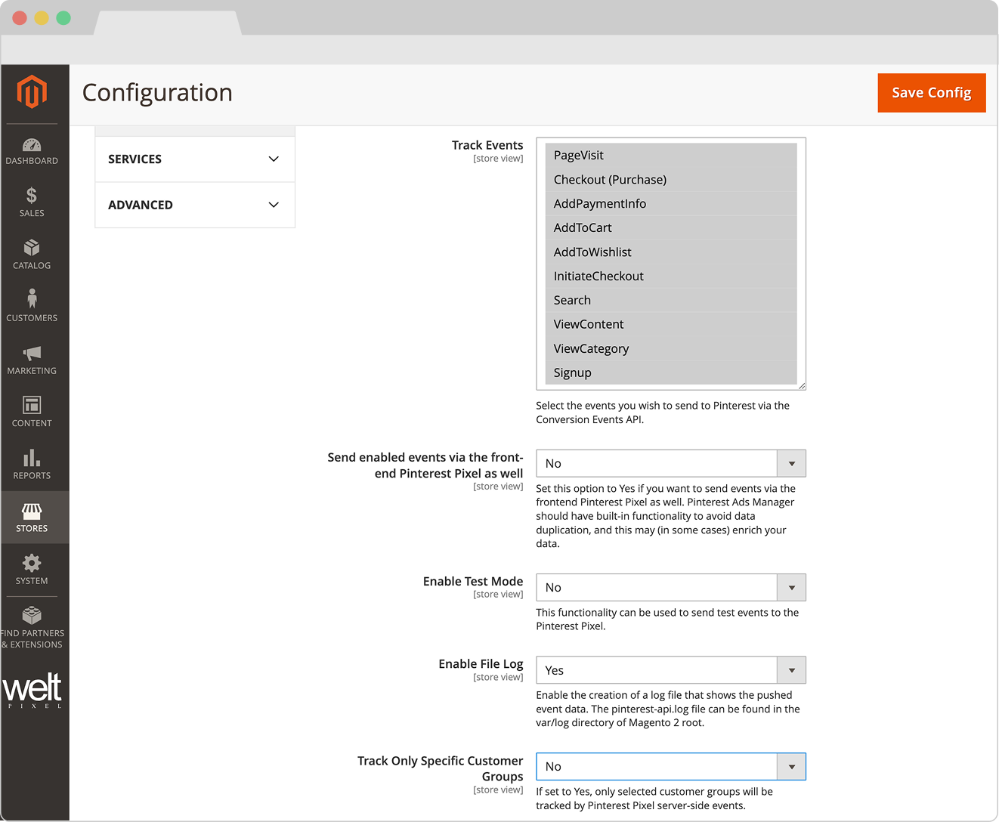

Requires the Google Analytics 4 PRO extension.
Transform your Magento 2 store's advertising capabilities with our Pinterest Conversions API integration. This powerful addon establishes a direct, secure connection between your eCommerce data and Pinterest Ads, enabling precise conversion tracking and smarter campaign optimization across Shopping, Performance Max, and paid social placements.
Designed specifically for Magento 2 merchants, this server-side implementation ensures reliable event delivery even in environments with strict privacy controls, Intelligent Tracking Prevention, or ad blockers. Your Pinterest performance data remains accurate, resilient, and ready to power bidding algorithms.
Bridge the Pinterest tag and the Conversions API to capture every critical interaction—purchases, add-to-carts, and checkout steps—even when client-side scripts are blocked.
Meet modern privacy standards while maximizing Pinterest campaign effectiveness. Server-side data sharing gives you granular control over what is sent, making it easier to document consent preferences.
Stay ahead of browser updates with a hybrid tracking approach that combines Pinterest tag flexibility with server-side reliability, ensuring consistent reporting as the advertising ecosystem evolves.
Consolidate your Magento 2 store's Pinterest signals through a single API connection. Streamline pixel implementation, reduce duplication, and keep attribution clean across every funnel touchpoint.
Customers interact with your Magento 2 store (product views, add to carts, checkout steps, purchases)
Server-side tracking captures the full event payload with 100% reliability
Secure data transmission to Pinterest occurs through the official Conversions API
Real-time conversion data appears in Pinterest Ads Manager for optimization
The following diagram illustrates the seamless integration between your Magento 2 store, server-side processing, and the Pinterest Conversions API:

To use the Pinterest Conversions API Addon, you'll need the following:
This extension is installed via Composer, which is the official and only supported installation method.
php bin/magento deploy:mode:set developer
Head into the Downloadable Products section of your weltpixel.com account. This is where you'll be able to see your Composer Configuration Commands.
You'll need to have Composer installation enabled for your account. If you don't see the Composer Configuration Commands, please contact our support team.
Run the generated commands from your account. Example commands:
composer config repositories.weltpixel composer https://weltpixel.repo.packagist.com/your-id/
composer config --global --auth http-basic.weltpixel.repo.packagist.com token your-token
These commands will provide you access to the WeltPixel repository. Replace 'your-id' and 'your-token' with the actual values from your account.
Run the following command in your Magento root directory:
composer require weltpixel/module-ga4-pinterestss
Run the following commands:
php bin/magento setup:upgrade php bin/magento setup:di:compile php bin/magento setup:static-content:deploy -f
Flush any caches:
php bin/magento cache:flush
If your store was in production mode, switch it back:
php bin/magento deploy:mode:set production
Wooohooo! The extension is now installed on your Magento store! Congrats!
Important Notice: To gain access to your Pinterest Conversions API Access Token and Advertiser ID, you need a Pinterest Business account with an app approved for the Conversions API. Generate tokens under Business Access → Conversions API, otherwise server-side tracking will not authenticate.
Admin → WeltPixel → Google Analytics 4 Ecommerce PRO → Pinterest Conversions API Settings
Toggle this to Yes to activate the Pinterest Conversions API integration. Events selected below will be sent server-to-server in addition to the Pinterest tag firing on the storefront.
This ID can be found in your Pinterest Ads Manager account under Ad Account Overview → Conversions → Conversions API → Set up API. Add it here so the addon knows which Pinterest account to target.
Paste the Access Token generated in Pinterest Business Access. Each advertiser (ad account) you connect requires a valid token to authorize requests.
If you only want to forward events when hashed identifiers such as email are available, set this option to Yes. Otherwise, Pinterest will stitch events via the Pinterest tag visitor ID even for guest shoppers.
Select the events you wish to send to Pinterest via the API. Available options are:
Note: Make sure the Enable Pinterest Pixel Tracking option in the section above is set to Yes, and that you've added your Pinterest Tag ID so the browser and server events can be matched.


Enable this option if you want the selected events to fire both through the Pinterest tag and the Conversions API. Duplicated events are automatically deduplicated via the event ID.
Use this option to send test events to the Pinterest Pixel. Ideal when validating the configuration without polluting production reporting.
Enable the creation of a log file that shows the pushed event data. The pinterest-api.log file can be found in the var/log directory of your Magento 2 root.
If set to Yes, only selected customer groups will be tracked by Pinterest server-side events.
If set to Yes, you'll be able to add extra Pinterest advertiser IDs to which you want to send eCommerce event data. Each advertiser requires its own Access Token. Note: Adding a new advertiser here will only send the enabled server-side events. If you need PageVisit events for attribution, also add the additional Pinterest Tag IDs in the Pinterest Pixel Tracking section above (comma separated).
Access our comprehensive documentation in the Knowledge Base for detailed setup and configuration instructions.
Our dedicated support team is ready to assist you with any technical issues or questions you may encounter during setup and usage.
Stay current with regular updates ensuring compatibility with the latest Magento versions and Pinterest API changes.
The Pinterest Conversions API Addon enables server-side tracking of customer events from your Magento 2 store to Pinterest, providing accurate conversion data for bidding, attribution, and reporting.
Yes, this addon requires the Google Analytics 4 PRO extension to be installed and configured on your Magento 2 store.
The addon supports tracking of Pinterest events such as PageVisit, Checkout (Purchase), AddPaymentInfo, AddToCart, AddToWishlist, InitiateCheckout, Search, ViewContent, ViewCategory, and Signup.
All data is transmitted securely using Pinterest's official Conversions API endpoints with access token authentication and HTTPS encryption.
Future updates will include additional features and enhancements to the Pinterest Conversions API Addon.